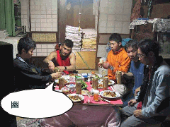

甲府クライミング＆宴会 | ２００２．０６．２９−３０ |
 かじり付きましょう | 今回は誰からもレポートが来ないため、よく分からないが私が書きます。 あー、さて、クライミングに行きました。 久しぶりに。 しかも外。 行った先は甲府。林道をガンガン走っていき、なーんにもない空き地に車を止める。 車から歩くこと５分ぐらい。早い！。車からこんなに早く岩場に行ける所なんて、今までにない。 久しぶりなので、とりあえず見学。垂直に切り立った岩に、みんながかじり付いていく。 見上げていると首が痛い。ザイル一杯に使っているので、頂点に付くと人が小粒に見える。 |
| しばらくして、チャレンジしてみることに。久しぶりのクライミングシューズは、やはり痛い。 岩にへばりつくと、緊張する。別にザイルで確保されているから、落ちることは無いと分かっていても、この緊張は変わらない。 手を上の方の岩のヘリにかけ、次に足のつま先を腰ぐらいのヘリにかけてよじ登る。 何回か、どうして良いか分からなくなるが、時間をかけて難易度の低いルートを登る。 結構気持ちがいい。全然ハイレベルで無いが、本人は気持ち良いのだ。(^ヘ^)v 上の方から下を見下ろすと、ザイルを確保している鈴木さんが小さく見える。 そんなこんなで、クライミングを楽しみました。 |  股裂け |
 夜景！ | さて、今晩の宿は、噂の民家。一泊一人１２００円で泊まれる、まるで海外のモーテルのような安さである。 （左写真／夜の玄関） それでも、小さな台所、土間、コタツがある和室と、もう一つ和室。アンド便所。後は隠れた納戸、昔の釜戸がある土間。 テレビはちゃんと映るし、元々ここに住んでいたと思われる、白黒のばあちゃんの写真も完備。 いたせりつくせりだね。 なんか、合宿みたいでおもしろい。こんな宿好きです。 |
| 夕飯の買い物をして、温泉に浸かり民家へ。夕食を準備しつつ、サッカーワールドカップを見る。 夕食はスパゲティとビール。その他モロモロ。もう、宴会です。 （右写真） いや〜もう、渋いの一言。田舎のばあちゃん家に行ったみたい。そんな感じです。 次の日は、夜、雨が降ったため、岩が濡れているので、室内の人口岩にＧｏ！また、楽し。 |  宴会です |